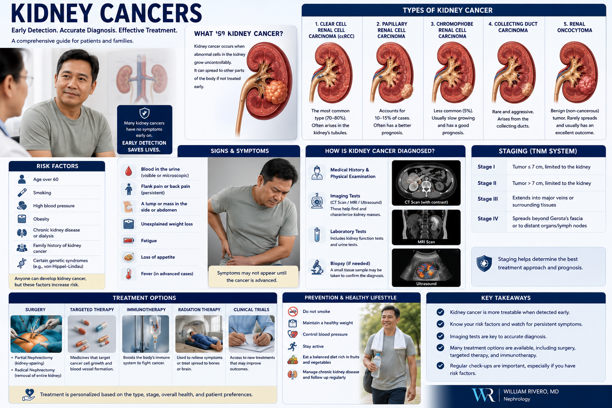

Kidney Cancer — Key FactsKanser sa Bato — Mahahalagang KatotohananKanser sa Kidney — Mga Importanteng Kamatuoran Kanser king Batu — Mahahalagang Katotohanan
Kidney cancer is among the top 10 cancers worldwide. The most important fact: most kidney cancers are found incidentally on imaging done for other reasons — before any symptoms appear. When found early (Stage I), the 5-year survival rate exceeds 90%. When found at Stage IV, it falls below 15%. Incidental discovery is your best chance.Ang kanser sa bato ay kabilang sa nangungunang 10 na kanser sa buong mundo. Ang pinakamahalagang katotohanan: karamihan sa mga kanser sa bato ay natutuklasan nang hindi sinasadya sa imaging na ginawa para sa ibang dahilan — bago pa lumabas ang anumang sintomas. Kapag natuklasan nang maaga (Stage I), ang 5-taong survival rate ay lumagpas sa 90%. Kapag natuklasan sa Stage IV, bumaba ito sa ibaba ng 15%. Ang hindi sinasadyang pagtuklas ay ang inyong pinakamahusay na pagkakataon.Ang kanser sa kidney kabilang sa nangungunang 10 ka kanser sa tibuok kalibutan. Ang labing importanteng kamatuoran: kadaghanan sa mga kanser sa kidney nakit-an sa walay tuyo sa imaging nga gihimo alang sa ubang hinungdan — sa wala pa mogawas ang bisan unsang sintomas. Kon nakit-an sayo (Stage I), ang 5-ka-tuig nga survival rate molapas sa 90%. Kon nakit-an sa Stage IV, mohulog kini sa ubos sa 15%. Ang walay tuyo nga pagkakita mao ang imong labing maayong kahigayonan. Ing kanser king batu ya kabilang king nangungunang 10 a kanser king buong mundo. Ing pinakamahalagang katotohanan: kadaklan king deng kanser king batu ya natutuklasan nang ali sinasadya king imaging a ginawa para king ibang dahilan — bago pa lumabas ing anumang sintomas. Nung natuklasan nang maaga (Stage I), ing 5-taong survival rate ya lumagpas king 90%. Nung natuklasan king Stage IV, bumaba ini king ibaba ning 15%. Ing ali sinasadyang pagtuklas ya ing inyu pinakamahusay a pagkakabanua.

The "incidentaloma" advantageAng kalamangan ng "incidentaloma"Ang bentahe sa "incidentaloma" Ing kalamangan ning "incidentaloma"
With the widespread use of ultrasound and CT scans in the Philippines for routine health checks, abdominal pain evaluation, and CKD monitoring, kidney tumors are increasingly found before causing any symptoms — when curative surgery is most effective.Sa malawakang paggamit ng ultrasound at CT scan sa Pilipinas para sa mga regular na pagsusuri sa kalusugan, pagsusuri ng sakit ng tiyan, at pagsubaybay sa CKD, ang mga tumor sa bato ay lalong natutuklasan bago pa makapagdulot ng anumang sintomas — kapag pinaka-epektibo ang kuratibon na operasyon.Sa lapad nga paggamit sa ultrasound ug CT scan sa Pilipinas alang sa regular nga pagsusi sa kahimsog, pagsusi sa sakit sa tiyan, ug pagbantay sa CKD, ang mga tumor sa kidney lalong nakit-an sa wala pa magdulot og bisan unsang sintomas — kon pinaka-epektibo ang kuratibon nga operasyon. King malawakang paggamit ning ultrasound at CT scan king Pilipinas para king deng regular a pagsusuri king kalusugan, pagsusuri ning sakit ning tiyan, at pagsubaybay king CKD, ing deng tumor king batu ya lalong natutuklasan bago pa makapagdulot ning anumang sintomas — nung pinaka-epektibo ing kuratibon a operasyon.
CKD patients have higher riskAng mga pasyenteng may CKD ay may mas mataas na panganibAng mga pasyente nga may CKD adunay mas taas nga peligro Ing deng pasyenteng atin CKD ya atin mas matas a panganib
Patients with CKD, especially those on long-term dialysis and those with acquired cystic kidney disease (ACKD), have 3–7 times the general population's risk of developing renal cell carcinoma. Annual kidney ultrasound is part of standard dialysis monitoring.Ang mga pasyenteng may CKD, lalo na ang mga nasa pangmatagalang dialysis at may acquired cystic kidney disease (ACKD), ay may 3–7 beses na mas mataas na panganib na magkaroon ng renal cell carcinoma kaysa sa pangkalahatang populasyon. Ang taunan na kidney ultrasound ay bahagi ng pamantayang pagsubaybay sa dialysis.Ang mga pasyente nga may CKD, ilabi na kadtong naa sa pangmatagalang dialysis ug adunay acquired cystic kidney disease (ACKD), adunay 3–7 ka beses nga mas taas nga peligro sa pagpalambo sa renal cell carcinoma kaysa sa kinatibuk-ang populasyon. Ang tinuig nga kidney ultrasound bahin sa naandang pagbantay sa dialysis. Ing deng pasyenteng atin CKD, lalo a ing deng nasa pangmatagalang dialysis at atin acquired cystic kidney disease (ACKD), ya atin 3–7 beses a mas matas a panganib a magkaroon ning renal cell carcinoma kaysa king pangkalahatang populasyon. Ing taunan a kidney ultrasound ya bahagi ning pamantayang pagsubaybay king dialysis.
Not All Kidney Cancers Are the SameHindi Lahat ng Kanser sa Bato ay ParehoDili Tanan nga Kanser sa Kidney Managsama Ali Amin ning Kanser king Batu ya Pareho
Renal cell carcinoma (RCC) arises from the cortical tubular cells. Transitional cell carcinoma (TCC/UTUC) arises from the lining of the renal pelvis and ureter. Each has distinct biology, staging, and treatment.
Renal Cell Carcinoma (RCC) — Clear CellRenal Cell Carcinoma (RCC) — Clear CellRenal Cell Carcinoma (RCC) — Clear Cell Renal Cell Carcinoma (RCC) — Clear Cell
Most common kidney cancer. Arises from proximal tubular cells in the cortex. Strongly associated with VHL gene mutation. Highly vascular — bleeds easily. Responds to targeted therapy (TKIs) and immunotherapy (checkpoint inhibitors). Tobacco and obesity are major risk factors.Ang pinakakaraniwang kanser sa bato. Nagmumula sa mga proximal tubular cell sa cortex. Malakas na nauugnay sa mutasyon ng VHL gene. Lubhang may daluyan ng dugo — madaling dumugo. Tumutugon sa targeted therapy (TKIs) at immunotherapy (checkpoint inhibitors). Ang tabako at labis na timbang ay pangunahing salik ng panganib.Ang labing kasagaran nga kanser sa kidney. Nagagikan sa mga proximal tubular cell sa cortex. Kusganong naugnay sa mutasyon sa VHL gene. Daghan kaayo og ugat sa dugo — sayon nga magdugo. Nagtubag sa targeted therapy (TKIs) ug immunotherapy (checkpoint inhibitors). Ang tabako ug labaw nga timbang pangunahing hinungdan sa peligro. Ing pinakakaraniwang kanser king batu. Nagmumula king deng proximal tubular cell king cortex. Malakas a nauugnay king mutasyon ning VHL gene. Lubhang atin daluyan ning daya — madaling dumugo. Tumutugon king targeted therapy (TKIs) at immunotherapy (checkpoint inhibitors). Ing tabako at labis a timbang ya pangunahing salik ning panganib.
Urothelial Carcinoma (TCC / UTUC)Urothelial Carcinoma (TCC / UTUC)Urothelial Carcinoma (TCC / UTUC) Urothelial Carcinoma (TCC / UTUC)
Arises from the transitional cell lining of the renal pelvis, ureter, or bladder. Upper tract urothelial carcinoma (UTUC) is particularly common in Taiwan and parts of Southeast Asia due to aristolochic acid (herbal medicine) exposure and BK virus. Presents with painless hematuria.Nagmumula sa transitional cell lining ng renal pelvis, ureter, o pantog. Ang upper tract urothelial carcinoma (UTUC) ay lalong karaniwan sa Taiwan at bahagi ng Timog-silangang Asya dahil sa aristolochic acid (gamot na herbal) at BK virus. Nagpapakita ng hindi masakit na hematuria.Nagagikan sa transitional cell lining sa renal pelvis, ureter, o pantog. Ang upper tract urothelial carcinoma (UTUC) labi ka kasagaran sa Taiwan ug bahin sa Timog-silangang Asya tungod sa aristolochic acid (herbal nga tambal) ug BK virus. Nagpakita sa walay sakit nga hematuria. Nagmumula king transitional cell lining ning renal pelvis, ureter, o pantog. Ing upper tract urothelial carcinoma (UTUC) ya lalong karaniwan king Taiwan at bahagi ning Timog-silangang Asya dahil king aristolochic acid (gamut a herbal) at BK virus. Nagpapakita ning ali masakit a hematuria.
Wilms Tumor (Nephroblastoma)Wilms Tumor (Nephroblastoma)Wilms Tumor (Nephroblastoma) Wilms Tumor (Nephroblastoma)
The most common kidney cancer in children (ages 3–4 peak). Embryonal tumor arising from primitive kidney cells. Often presents as a painless abdominal mass found by parents or on routine exam. Excellent prognosis — 5-year survival >90% with modern chemotherapy + surgery ± radiation.Ang pinakakaraniwang kanser sa bato sa mga bata (kasukdulan sa edad 3–4). Embryonal tumor na nagmumula sa mga primitive na selula ng bato. Madalas na nagpapakita bilang isang hindi masakit na masa sa tiyan na natuklasan ng mga magulang o sa regular na pagsusuri. Mahusay na prognosis — 5-taong survival na higit sa 90% sa modernong chemotherapy + operasyon ± radiation.Ang labing kasagaran nga kanser sa kidney sa mga bata (tuktok sa edad 3–4). Embryonal tumor nga nagagikan sa mga primitive nga selula sa kidney. Sagad nagpakita nga usa ka walay sakit nga masa sa tiyan nga nakit-an sa mga ginikanan o sa regular nga pagsusi. Maayo nga prognosis — 5-ka-tuig nga survival nga labaw sa 90% sa modernong chemotherapy + operasyon ± radiation. Ing pinakakaraniwang kanser king batu king deng bata (kasukdulan king edad 3–4). Embryonal tumor a nagmumula king deng primitive a selula ning batu. Madalas a nagpapakita bilang metung a ali masakit a masa king tiyan a natuklasan ning deng magulang o king regular a pagsusuri. Mahusay a prognosis — 5-taong survival a higit king 90% king modernong chemotherapy + operasyon ± radiation.
Renal Lymphoma & MetastasesRenal Lymphoma at MetastasisRenal Lymphoma ug Metastasis Renal Lymphoma at Metastasis
The kidney can be involved by lymphoma (usually non-Hodgkin's) or by metastases from lung, breast, colon, or melanoma. Bilateral kidney involvement, multiple lesions, and systemic symptoms (fever, weight loss, night sweats) suggest lymphoma rather than primary kidney cancer.Ang bato ay maaaring maapektuhan ng lymphoma (karaniwang non-Hodgkin's) o ng metastasis mula sa baga, suso, colon, o melanoma. Ang pagsasangkot ng parehong bato, maraming sugat, at mga sistematikong sintomas (lagnat, pagbaba ng timbang, pawis sa gabi) ay nagmumungkahi ng lymphoma kaysa sa pangunahing kanser sa bato.Ang kidney mahimong maapektuhan sa lymphoma (kasagaran non-Hodgkin's) o sa metastasis gikan sa baga, dughan, colon, o melanoma. Ang pagsangkot sa duha ka kidney, daghang sugat, ug mga sistematikong sintomas (hilanat, paghulog sa timbang, singot sa gabii) nagsugyot sa lymphoma kaysa sa pangunahing kanser sa kidney. Ing batu ya maaaring maapektuhan ning lymphoma (karaniwang non-Hodgkin's) o ning metastasis mula king baga, suso, colon, o melanoma. Ing pagsasangkot ning parehong batu, dacal a sugat, at deng sistematikong sintomas (lagnat, pagbaba ning timbang, pawis king gabi) ya nagmumungkahi ning lymphoma kaysa king pangunahing kanser king batu.
Who Is at Risk?Sino ang Nasa Panganib?Kinsa ang Naa sa Peligro? Sino ing Nasa Panganib?
Tobacco smokingPaninigarilyoPagpanigarilyo Paninigarilyo
Doubles RCC risk. Dose-dependent — heavier smokers have proportionally higher risk. Cessation reduces risk significantly within 10 years.Dinidoble ang panganib ng RCC. Nakasalalay sa dami — ang mas matinding manigarilyo ay may proportionally na mas mataas na panganib. Ang paghinto ay makabuluhang nagpapababa ng panganib sa loob ng 10 taon.Gidoble ang peligro sa RCC. Nakasalalay sa dami — ang mas baga nga mamanigarilyo adunay proporsyonal nga mas taas nga peligro. Ang paghunong makusgong nagpaubos sa peligro sulod sa 10 ka tuig. Dinidoble ing panganib ning RCC. Nakasalalay king dami — ing mas matinding manigarilyo ya atin proportionally a mas matas a panganib. Ing paghinto ya makabuluhang nagpapababa ning panganib king loob ning 10 banua.
ObesityLabis na TimbangSobrang Timbang Labis a Timbang
Each 5 kg/m² increase in BMI raises RCC risk by 24–25%. Adipose tissue produces estrogen and adipokines that promote tumor cell proliferation in the kidney.Ang bawat pagtaas ng 5 kg/m² sa BMI ay nagpapataas ng panganib ng RCC ng 24–25%. Ang adipose tissue ay gumagawa ng estrogen at adipokines na nagtataguyod ng pagpaparami ng mga tumor cell sa bato.Ang matag pagtaas og 5 kg/m² sa BMI nagpataas sa peligro sa RCC og 24–25%. Ang adipose tissue naghimo og estrogen ug adipokines nga nagpalambo sa pagpadaghan sa mga tumor cell sa kidney. Ing bawat pagtaas ning 5 kg/m² king BMI ya nagpapataas ning panganib ning RCC ning 24–25%. Ing adipose tissue ya gumagawa ning estrogen at adipokines a nagtataguyod ning pagpaparami ning deng tumor cell king batu.
HypertensionMataas na Presyon ng DugoTaas nga Presyon sa Dugo Matas a Presyon ning Daya
Independently doubles RCC risk — through chronic ischemia, RAAS activation, and oxidative stress. The association is independent of antihypertensive medications used.Nag-iisang nagdodoble ng panganib ng RCC — sa pamamagitan ng chronic ischemia, RAAS activation, at oxidative stress. Ang ugnayan ay independyente sa mga gamot para sa mataas na presyon na ginagamit.Sa kaugalingon nagdoble sa peligro sa RCC — pinaagi sa chronic ischemia, RAAS activation, ug oxidative stress. Ang ugnayan independyente sa mga tambal alang sa taas nga presyon nga gigamit. Nag-iisang nagdodoble ning panganib ning RCC — king pamamagitan ning chronic ischemia, RAAS activation, at oxidative stress. Ing ugnayan ya independyente king deng gamut para king matas a presyon a ginagamit.
Long-term dialysis / ACKDPangmatagalang dialysis / ACKDPangmatagalang dialysis / ACKD Pangmatagalang dialysis / ACKD
Acquired cystic kidney disease (ACKD) develops in 40–60% of dialysis patients over 3 years. Up to 7% of ACKD patients develop RCC. Annual kidney ultrasound is recommended for all dialysis patients.Ang acquired cystic kidney disease (ACKD) ay nagkakaroon sa 40–60% ng mga pasyenteng nasa dialysis sa loob ng 3 taon. Hanggang 7% ng mga pasyenteng may ACKD ay nagkakaroon ng RCC. Ang taunan na kidney ultrasound ay inirerekomenda para sa lahat ng pasyenteng nasa dialysis.Ang acquired cystic kidney disease (ACKD) nagpalambo sa 40–60% sa mga pasyente sa dialysis sulod sa 3 ka tuig. Hangtod sa 7% sa mga pasyente nga may ACKD nagpalambo og RCC. Ang tinuig nga kidney ultrasound girekomenda alang sa tanan nga pasyente sa dialysis. Ing acquired cystic kidney disease (ACKD) ya nagkakaroon king 40–60% ning deng pasyenteng nasa dialysis king loob ning 3 banua. Anggang 7% ning deng pasyenteng atin ACKD ya nagkakaroon ning RCC. Ing taunan a kidney ultrasound ya inirerekomenda para king amin ning pasyenteng nasa dialysis.
Hereditary syndromesMga hereditary na sindromaMga hereditary nga sindroma Deng hereditary a sindroma
Von Hippel-Lindau (VHL), hereditary papillary RCC, Birt-Hogg-Dubé, tuberous sclerosis. Consider genetic testing when: bilateral/multifocal tumors, age <46, family history, or associated features (hemangioblastomas, pancreatic cysts).Von Hippel-Lindau (VHL), hereditary papillary RCC, Birt-Hogg-Dubé, tuberous sclerosis. Isaalang-alang ang genetic testing kapag: bilateral/multifocal na tumor, edad na wala pang 46, kasaysayan ng pamilya, o mga kaugnay na katangian (hemangioblastomas, pancreatic cysts).Von Hippel-Lindau (VHL), hereditary papillary RCC, Birt-Hogg-Dubé, tuberous sclerosis. Hunahunaon ang genetic testing kon: bilateral/multifocal nga tumor, edad nga wala pay 46, kasaysayan sa pamilya, o kaugnay nga mga bahin (hemangioblastomas, pancreatic cysts). Von Hippel-Lindau (VHL), hereditary papillary RCC, Birt-Hogg-Dubé, tuberous sclerosis. Isaalang-alang ing genetic testing nung: bilateral/multifocal a tumor, edad a ala pang 46, kasaysayan ning pamilya, o deng kaugnay a katangian (hemangioblastomas, pancreatic cysts).
Aristolochic acid (herbal medicines)Aristolochic acid (mga gamot na herbal)Aristolochic acid (mga herbal nga tambal) Aristolochic acid (deng gamut a herbal)
A major cause of UTUC in Asia. Found in certain Chinese herbal preparations and some traditional Filipino herbal teas. Causes a characteristic mutation in the SETD2/TP53 genes. Disclose all herbal medicine use to your physician.Isang pangunahing sanhi ng UTUC sa Asya. Makikita sa ilang mga Chinese herbal na paghahanda at ilang tradisyonal na Filipino herbal teas. Nagdudulot ng katangiang mutasyon sa mga SETD2/TP53 gene. Ipaalam sa inyong doktor ang lahat ng paggamit ng herbal na gamot.Usa ka pangunahing hinungdan sa UTUC sa Asya. Makita sa pipila ka Chinese herbal nga paghimo ug pipila ka tradisyonal nga Filipino herbal teas. Nagdulot og katangian nga mutasyon sa mga SETD2/TP53 gene. Ipahibalo sa inyong doktor ang tanan nga paggamit sa herbal nga tambal. Metung a pangunahing sanhi ning UTUC king Asya. Makikita king ilang deng Chinese herbal a paghahanda at ilang tradisyonal a Filipino herbal teas. Nagdudulot ning katangiang mutasyon king deng SETD2/TP53 gene. Ipaalam king inyu doktor ing amin ning paggamit ning herbal a gamut.
Signs and Symptoms — The "Classic Triad" Is RareMga Palatandaan at Sintomas — Ang "Classic Triad" ay BihiraMga Timaan ug Sintomas — Ang "Classic Triad" Bihira Deng Palatandaan at Sintomas — Ing "Classic Triad" ya Bihira
The classic triad of flank pain + hematuria + palpable mass occurs in only 6–10% of patients — and usually indicates advanced disease. Most kidney cancers today are found incidentally.Ang klasikong triad ng sakit sa tagiliran + hematuria + nararamdamang masa ay nagaganap sa 6–10% lamang ng mga pasyente — at karaniwang nagpapahiwatig ng advanced na sakit. Karamihan sa mga kanser sa bato ngayon ay natutuklasan nang hindi sinasadya.Ang klasikong triad sa sakit sa tagiliran + hematuria + mahikap nga masa nagaganap sa 6–10% lamang sa mga pasyente — ug kasagaran nagpakita sa advanced nga sakit. Kadaghanan sa mga kanser sa kidney karon nakit-an sa walay tuyo. Ing klasikong triad ning sakit king tagiliran + hematuria + nararamdamang masa ya nagaganap king 6–10% lamang ning deng pasyente — at karaniwang nagpapahiwatig ning advanced a sakit. Kadaklan king deng kanser king batu ngayon ya natutuklasan nang ali sinasadya.
The shift from symptomatic to incidental discovery has dramatically improved kidney cancer outcomes over the past two decades — a direct result of more accessible ultrasound and CT scanning.
Local symptomsMga lokal na sintomasMga lokal nga sintomas Deng lokal a sintomas
Painless hematuria (most important warning sign), flank pain or dull ache, palpable abdominal or flank mass, varicocele (left-sided: blocked renal vein), lower extremity edema from vena cava involvement.Hindi masakit na hematuria (pinakamahalagang babala), sakit sa tagiliran o mapurol na kirot, nararamdamang masa sa tiyan o tagiliran, varicocele (kaliwang panig: naharang na renal vein), pamamaga ng ibabang bahagi ng katawan dahil sa pagsasangkot ng vena cava.Walay sakit nga hematuria (labing importanteng babala), sakit sa tagiliran o mapurol nga sakit, mahikap nga masa sa tiyan o tagiliran, varicocele (kaliwang bahin: nahugpong nga renal vein), pamaga sa ubos nga bahin sa lawas tungod sa pagsangkot sa vena cava. Ali masakit a hematuria (pinakamahalagang babala), sakit king tagiliran o mapurol a kirot, nararamdamang masa king tiyan o tagiliran, varicocele (kaliwang panig: naharang a renal vein), pamamaga ning ibabang bahagi ning bangkî dahil king pagsasangkot ning vena cava.
Paraneoplastic syndromesMga paraneoplastic syndromeMga paraneoplastic syndrome Deng paraneoplastic syndrome
RCC is famous for these: hypertension (renin-secreting), polycythemia (EPO-secreting), hypercalcemia (PTHrP), Stauffer syndrome (elevated liver enzymes without liver metastasis), unexplained fever, weight loss. These can precede the mass diagnosis by months.Ang RCC ay kilala para sa mga ito: hypertension (nagsesekreta ng renin), polycythemia (nagsesekreta ng EPO), hypercalcemia (PTHrP), Stauffer syndrome (mataas na liver enzymes nang walang liver metastasis), hindi maipaliwanag na lagnat, pagbaba ng timbang. Maaari itong mauna sa diagnosis ng masa ng ilang buwan.Ang RCC bantog niini: hypertension (nagsekreto og renin), polycythemia (nagsekreto og EPO), hypercalcemia (PTHrP), Stauffer syndrome (taas nga liver enzymes nga walay liver metastasis), dili mapasabot nga hilanat, paghulog sa timbang. Mahimong molabay kini sa diagnosis sa masa og pipila ka buwan. Ing RCC ya kilala para king deng ini: hypertension (nagsesekreta ning renin), polycythemia (nagsesekreta ning EPO), hypercalcemia (PTHrP), Stauffer syndrome (matas a liver enzymes nang alang liver metastasis), ali maipaliwanag a lagnat, pagbaba ning timbang. Maaari itong mauna king diagnosis ning masa ning ilang bulan.
Diagnosis and EvaluationDiagnosis at PagsusuriDiagnosis ug Pagsusi Diagnosis at Pagsusuri
| TestPagsusuriPagsusi Pagsusuri | RoleLayuninPapel Layunin | Key findingsMahahalagang natuklasanImportanteng mga nakit-an Mahahalagang natuklasan |
|---|---|---|
| Renal ultrasoundRenal ultrasoundRenal ultrasound Renal ultrasound | First-line screening and incidental detectionUnang linya ng screening at hindi sinasadyang pagtuklasUna nga linya sa screening ug walay tuyo nga pagkakita Unang linya ning screening at ali sinasadyang pagtuklas | Distinguishes solid mass (suspicious) from simple cyst (benign). Cannot fully characterize — CT needed for solid lesions.Nagpapakilala ng solid mass (kahina-hinala) mula sa simpleng cyst (benign). Hindi ganap na makapagpaliwanag — kailangan ang CT para sa mga solid na sugat.Nagpangwehay sa solid mass (kahina-hinala) gikan sa simpleng cyst (benign). Dili hingpit nga makahulagway — kinahanglan og CT alang sa mga solid nga sugat. Nagpapakilala ning solid mass (kahina-hinala) mula king simpleng cyst (benign). Ali ganap a makapagpaliwanag — kailangan ing CT para king deng solid a sugat. |
| CT scan with contrast (triphasic)CT scan na may contrast (triphasic)CT scan nga may contrast (triphasic) CT scan a atin contrast (triphasic) | Gold standard for characterization and stagingGold standard para sa pagpapakilala at stagingGold standard alang sa paghulagway ug staging Gold standard para king pagpapakilala at staging | Enhancement pattern, fat content (AML vs RCC), vascular invasion, nodal involvement, metastases. Required before surgery.Pattern ng enhancement, nilalaman ng taba (AML vs RCC), pagsalakay sa daluyan, pagsasangkot ng node, metastasis. Kinakailangan bago ang operasyon.Pattern sa enhancement, sulod sa taba (AML vs RCC), pagsulod sa ugat, pagsangkot sa node, metastasis. Kinahanglan sa wala pa ang operasyon. Pattern ning enhancement, nilalaman ning taba (AML vs RCC), pagsalakay king daluyan, pagsasangkot ning node, metastasis. Kinakailangan bago ing operasyon. |
| MRI abdomenMRI ng tiyanMRI sa tiyan MRI ning tiyan | When CT contrast is contraindicated (CKD, allergy)Kapag kontraindikado ang CT contrast (CKD, allergy)Kon kontraindikado ang CT contrast (CKD, allergy) Nung kontraindikado ing CT contrast (CKD, allergy) | Excellent soft tissue detail. Preferred for venous thrombus extent (IVC involvement).Mahusay na detalye ng malambot na tisyu. Mas pinipili para sa lawak ng venous thrombus (pagsasangkot ng IVC).Maayo nga detalye sa humok nga tisyu. Mas gipalabi alang sa gidak-on sa venous thrombus (pagsangkot sa IVC). Mahusay a detalye ning malambot a tisyu. Mas pinipili para king lawak ning venous thrombus (pagsasangkot ning IVC). |
| Chest CTCT ng dibdibCT sa dughan CT ning dibdib | Lung metastasis stagingStaging ng metastasis sa bagaStaging sa metastasis sa baga Staging ning metastasis king baga | RCC metastasizes to lung (75%), bone, liver, adrenal, brain. Must be done before treatment decisions.Ang RCC ay nagme-metastasize sa baga (75%), buto, atay, adrenal, utak. Dapat gawin bago ang mga desisyon sa paggamot.Ang RCC nagmetastasize sa baga (75%), bukog, atay, adrenal, utok. Kinahanglan buhaton sa wala pa ang mga desisyon sa pagtambal. Ing RCC ya nagme-metastasize king baga (75%), buto, atay, adrenal, utak. Dapat gawin bago ing deng desisyon king paggamut. |
| Bone scan / brain MRIBone scan / brain MRIBone scan / brain MRI Bone scan / brain MRI | When symptoms suggest metastasisKapag nagmumungkahi ng metastasis ang mga sintomasKon nagsugyot og metastasis ang mga sintomas Nung nagmumungkahi ning metastasis ing deng sintomas | Bone pain, elevated ALP, or neurological symptoms prompt bone/brain imaging.Sakit ng buto, mataas na ALP, o mga neurological na sintomas ang nagpapagawa ng bone/brain imaging.Sakit sa bukog, taas nga ALP, o mga neurological nga sintomas nagpapugos sa bone/brain imaging. Sakit ning buto, matas a ALP, o deng neurological a sintomas ing nagpapagawa ning bone/brain imaging. |
| Urine cytologyUrine cytologyUrine cytology Urine cytology | For suspected UTUC/TCCPara sa pinaghihinalaang UTUC/TCCAlang sa giduhaduha nga UTUC/TCC Para king pinaghihinalaang UTUC/TCC | Malignant cells in urine from transitional cell carcinoma. Sensitivity moderate — negative cytology does not rule out UTUC.Mga malignant na selula sa ihi mula sa transitional cell carcinoma. Katamtamang sensitivity — ang negatibong cytology ay hindi nagtatanggal ng UTUC.Mga malignant nga selula sa ihi gikan sa transitional cell carcinoma. Katamtamang sensitivity — ang negatibong cytology dili nagwagtang sa UTUC. Deng malignant a selula king ihi mula king transitional cell carcinoma. Katamtamang sensitivity — ing negatibong cytology ya ali nagtatanggal ning UTUC. |
| Renal mass biopsyBiopsy ng masa sa batoBiopsy sa masa sa kidney Biopsy ning masa king batu | When diagnosis is uncertain or systemic treatment plannedKapag hindi sigurado ang diagnosis o naplanong systemic treatmentKon dili sigurado ang diagnosis o naplanong systemic treatment Nung ali sigurado ing diagnosis o naplanong systemic treatment | Core needle biopsy of solid renal mass is safe and accurate (95% diagnostic yield). Used when surgery is not immediately planned or to confirm metastatic disease.Ang core needle biopsy ng solid renal mass ay ligtas at tumpak (95% diagnostic yield). Ginagamit kapag hindi agad naplanong operasyon o upang kumpirmahin ang metastatic na sakit.Ang core needle biopsy sa solid renal mass luwas ug tukma (95% diagnostic yield). Gigamit kon dili dayon naplanong operasyon o aron kumpirmahin ang metastatic nga sakit. Ing core needle biopsy ning solid renal mass ya ligtas at tumpak (95% diagnostic yield). Ginagamit nung ali agad naplanong operasyon o upang kumpirmahin ing metastatic a sakit. |
| CBC, LFTs, calcium, creatinineCBC, LFTs, calcium, creatinineCBC, LFTs, calcium, creatinine CBC, LFTs, calcium, creatinine | Baseline and paraneoplastic workupBaseline at paraneoplastic na pagsusuriBaseline ug paraneoplastic nga pagsusi Baseline at paraneoplastic a pagsusuri | Anemia, elevated ESR, hypercalcemia, elevated LFTs (Stauffer syndrome), polycythemia — all classic RCC paraneoplastic findings.Anemia, mataas na ESR, hypercalcemia, mataas na LFTs (Stauffer syndrome), polycythemia — lahat ay klasikong RCC paraneoplastic findings.Anemia, taas nga ESR, hypercalcemia, taas nga LFTs (Stauffer syndrome), polycythemia — tanan klasikong RCC paraneoplastic findings. Anemia, matas a ESR, hypercalcemia, matas a LFTs (Stauffer syndrome), polycythemia — amin ya klasikong RCC paraneoplastic findings. |
TNM Staging — What Stage Means for YouTNM Staging — Ano ang Ibig Sabihin ng Stage para sa InyoTNM Staging — Unsa ang Kahulogan sa Stage alang Kaninyo TNM Staging — Ano ing Ibig Sabihin ning Stage para king Inyo
Early detection at Stage I changes prognosis from <15% to >90% five-year survival. This is why incidental discovery through routine ultrasound is life-saving.
Treatment by Stage and TypePaggamot ayon sa Stage at UriPagtambal sumala sa Stage ug Klase Paggamut ayon king Stage at Uri
Surgery — the cornerstone for localized diseaseOperasyon — ang pundasyon para sa lokal na sakitOperasyon — ang pundasyon alang sa lokal nga sakit Operasyon — ing pundasyon para king lokal a sakit
Radical nephrectomy (entire kidney removed) for large tumors or Stage III. Partial nephrectomy (nephron-sparing) preferred for tumors ≤7 cm and when preserving kidney function is critical — especially in CKD patients with solitary kidney or bilateral tumors. Laparoscopic or robotic approaches reduce recovery time and complications.Radical nephrectomy (buong bato ay tinanggal) para sa malalaking tumor o Stage III. Partial nephrectomy (nephron-sparing) ang mas pinipili para sa mga tumor na ≤7 cm at kapag kritikal ang pagpapanatili ng function ng bato — lalo na sa mga pasyenteng may CKD na may iisang bato o bilateral na tumor. Ang laparoscopic o robotic na pamamaraan ay nagpapababa ng oras ng pagbawi at mga komplikasyon.Radical nephrectomy (tibuok kidney gikuha) alang sa dagkong tumor o Stage III. Partial nephrectomy (nephron-sparing) mas gipalabi alang sa mga tumor nga ≤7 cm ug kon kritikal ang pagpreserba sa function sa kidney — ilabi na sa mga pasyente nga may CKD nga adunay usa ka kidney o bilateral nga tumor. Ang laparoscopic o robotic nga pamaagi nagpaubos sa oras sa pagkaayo ug mga komplikasyon. Radical nephrectomy (buong batu ya tinanggal) para king malalaking tumor o Stage III. Partial nephrectomy (nephron-sparing) ing mas pinipili para king deng tumor a ≤7 cm at nung kritikal ing pagpapanatili ning function ning batu — lalo a king deng pasyenteng atin CKD a atin iisang batu o bilateral a tumor. Ing laparoscopic o robotic a pamamaraan ya nagpapababa ning oras ning pagbawi at deng komplikasyon.
Active surveillance — for small, low-risk tumorsActive surveillance — para sa maliliit, mababang panganib na tumorActive surveillance — alang sa gagmayng, ubos nga peligro nga tumor Active surveillance — para king maliliit, mababang panganib a tumor
For masses ≤2 cm in elderly patients or those with high surgical risk, active surveillance with serial imaging every 3–6 months is an accepted alternative. Most small RCCs grow slowly (<3 mm/year). Intervention triggered if growth exceeds 5 mm/year or symptoms develop.Para sa mga masa na ≤2 cm sa mga matatandang pasyente o sa mga may mataas na surgical risk, ang active surveillance na may serial imaging tuwing 3–6 buwan ay isang tinatanggap na alternatibo. Karamihan sa maliliit na RCC ay dahan-dahang lumalaki (<3 mm/taon). Ang interbensyon ay nagaganap kapag lumampas sa 5 mm/taon ang paglaki o nagkakaroon ng mga sintomas.Alang sa mga masa nga ≤2 cm sa mga tigulang nga pasyente o kadtong adunay taas nga surgical risk, ang active surveillance nga adunay serial imaging matag 3–6 buwan usa ka tinawhong alternatibo. Kadaghanan sa gagmayng RCC hinay-hinay nagtubo (<3 mm/tuig). Ang interbensyon mahitabo kon molapas sa 5 mm/tuig ang pagtubo o magpalambo og mga sintomas. Para king deng masa a ≤2 cm king deng matatandang pasyente o king deng atin matas a surgical risk, ing active surveillance a atin serial imaging tuwing 3–6 bulan ya metung a tinatanggap a alternatibo. Kadaklan king maliliit a RCC ya dahan-dahang lumalaki (<3 mm/banua). Ing interbensyon ya nagaganap nung lumampas king 5 mm/banua ing paglaki o nagkakaroon ning deng sintomas.
Targeted therapy — for advanced/metastatic RCCTargeted therapy — para sa advanced/metastatic na RCCTargeted therapy — alang sa advanced/metastatic nga RCC Targeted therapy — para king advanced/metastatic a RCC
Sunitinib, pazopanib, cabozantinib (TKIs — tyrosine kinase inhibitors) target VEGF pathways driving RCC tumor vascularity. Everolimus (mTOR inhibitor) for second-line. These have transformed metastatic RCC from a disease with median survival <1 year (interferon era) to 2–3+ years.Ang sunitinib, pazopanib, cabozantinib (TKIs — tyrosine kinase inhibitors) ay nagta-target sa mga VEGF pathway na nagpapatakbo ng vascularity ng RCC tumor. Ang everolimus (mTOR inhibitor) para sa pangalawang linya. Ang mga ito ay nagbago ng metastatic RCC mula sa isang sakit na may median survival na <1 taon (interferon era) hanggang 2–3+ taon.Ang sunitinib, pazopanib, cabozantinib (TKIs — tyrosine kinase inhibitors) nagtarget sa mga VEGF pathway nga nagpadagan sa vascularity sa RCC tumor. Ang everolimus (mTOR inhibitor) alang sa ikaduha nga linya. Kini nagbag-o sa metastatic RCC gikan sa usa ka sakit nga adunay median survival nga <1 ka tuig (interferon era) ngadto sa 2–3+ ka tuig. Ing sunitinib, pazopanib, cabozantinib (TKIs — tyrosine kinase inhibitors) ya nagta-target king deng VEGF pathway a nagpapatakbo ning vascularity ning RCC tumor. Ing everolimus (mTOR inhibitor) para king pangalawang linya. Ing deng ini ya nagbago ning metastatic RCC mula king metung a sakit a atin median survival a <1 banua (interferon era) anggang 2–3+ banua.
Immunotherapy — checkpoint inhibitors for Stage IVImmunotherapy — checkpoint inhibitors para sa Stage IVImmunotherapy — checkpoint inhibitors alang sa Stage IV Immunotherapy — checkpoint inhibitors para king Stage IV
Nivolumab (anti-PD-1) + ipilimumab (anti-CTLA-4) combination is now first-line for intermediate/poor-risk metastatic RCC with durable responses in 20–40% of patients. Pembrolizumab + axitinib is another first-line option. These can produce long-term remissions unheard of in the pre-immunotherapy era.Ang kombinasyon ng nivolumab (anti-PD-1) + ipilimumab (anti-CTLA-4) ay ngayon ang unang linya para sa intermediate/poor-risk metastatic RCC na may matibay na mga tugon sa 20–40% ng mga pasyente. Ang pembrolizumab + axitinib ay isa pang pagpipilian sa unang linya. Maaari itong magdulot ng pangmatagalang remission na hindi pa nararanasan sa pre-immunotherapy era.Ang kombinasyon sa nivolumab (anti-PD-1) + ipilimumab (anti-CTLA-4) karon mao na ang unang linya alang sa intermediate/poor-risk metastatic RCC nga adunay lig-on nga mga tubag sa 20–40% sa mga pasyente. Ang pembrolizumab + axitinib usa pa ka pagpipilian sa unang linya. Mahimong makaprodusir kini og pangmatagalang remission nga wala pa mabati sa pre-immunotherapy era. Ing kombinasyon ning nivolumab (anti-PD-1) + ipilimumab (anti-CTLA-4) ya ngayon ing unang linya para king intermediate/poor-risk metastatic RCC a atin matibay a deng tugon king 20–40% ning deng pasyente. Ing pembrolizumab + axitinib ya metung pang pagpipilian king unang linya. Maaari itong magdulot ning pangmatagalang remission a ali pa nararanasan king pre-immunotherapy era.
RCC does not respond to conventional chemotherapyAng RCC ay hindi tumutugon sa karaniwang chemotherapyAng RCC dili motubag sa naandang chemotherapy Ing RCC ya ali tumutugon king karaniwang chemotherapy
Unlike most solid tumors, renal cell carcinoma is intrinsically resistant to standard cytotoxic chemotherapy. Cisplatin-based regimens used for other cancers are not effective for RCC. Treatment is exclusively surgical, targeted, or immunotherapeutic. Urothelial carcinoma (TCC) of the renal pelvis, however, does respond to platinum-based chemotherapy.Hindi tulad ng karamihan sa mga solid tumor, ang renal cell carcinoma ay likas na lumalaban sa pamantayang cytotoxic chemotherapy. Ang mga regimen na batay sa cisplatin na ginagamit para sa ibang mga kanser ay hindi epektibo para sa RCC. Ang paggamot ay eksklusibong operasyon, targeted, o immunotherapeutic. Ang urothelial carcinoma (TCC) ng renal pelvis, gayunpaman, ay tumutugon sa platinum-based chemotherapy.Dili sama sa kadaghanan sa mga solid tumor, ang renal cell carcinoma natural nga nagbabag sa naandang cytotoxic chemotherapy. Ang mga regimen nga nakabase sa cisplatin nga gigamit alang sa ubang mga kanser dili epektibo alang sa RCC. Ang pagtambal eksklusibo nga operasyon, targeted, o immunotherapeutic. Ang urothelial carcinoma (TCC) sa renal pelvis, bisan pa, motubag sa platinum-based chemotherapy. Ali tulad ning kadaklan king deng solid tumor, ing renal cell carcinoma ya likas a lumalaban king pamantayang cytotoxic chemotherapy. Ing deng regimen a batay king cisplatin a ginagamit para king ibang deng kanser ya ali epektibo para king RCC. Ing paggamut ya eksklusibong operasyon, targeted, o immunotherapeutic. Ing urothelial carcinoma (TCC) ning renal pelvis, gayunpaman, ya tumutugon king platinum-based chemotherapy.
Special Considerations for CKD PatientsMga Espesyal na Pagsasaalang-alang para sa mga Pasyenteng may CKDMga Espesyal nga Konsiderasyon alang sa mga Pasyente nga may CKD Deng Espesyal a Pagsasaalang-alang para king deng Pasyenteng atin CKD
After nephrectomy with pre-existing CKDPagkatapos ng nephrectomy na may kasalukuyang CKDHuman sa nephrectomy nga adunay naa nang CKD Kapabanuan ning nephrectomy a atin kasalukuyang CKD
Removing a kidney in a CKD patient significantly reduces remaining kidney function. Partial nephrectomy must be strongly advocated for whenever oncologically feasible. Post-nephrectomy, patients should be followed by nephrology for CKD progression monitoring, blood pressure control, and proteinuria management in the remaining kidney.Ang pag-alis ng bato sa isang pasyenteng may CKD ay makabuluhang nagpapababa ng natitirang function ng bato. Ang partial nephrectomy ay dapat na mahigpit na itaguyod sa tuwing posible mula sa oncological na pananaw. Pagkatapos ng nephrectomy, ang mga pasyente ay dapat na subaybayan ng nephrology para sa pagsubaybay ng pag-unlad ng CKD, kontrol ng blood pressure, at pamamahala ng proteinuria sa natitirang bato.Ang pagkuha sa kidney sa usa ka pasyente nga may CKD makusgong nagpaubos sa nahibilin nga function sa kidney. Ang partial nephrectomy kinahanglan kusganong ipangalagad kon mahimo oncologically. Human sa nephrectomy, ang mga pasyente kinahanglan sundan sa nephrology alang sa pagbantay sa pag-uswag sa CKD, kontrol sa blood pressure, ug pagdumala sa proteinuria sa nahibilin nga kidney. Ing pag-alis ning batu king metung a pasyenteng atin CKD ya makabuluhang nagpapababa ning natitirang function ning batu. Ing partial nephrectomy ya dapat a mahigpit a itaguyod king tuwing posible mula king oncological a pananaw. Kapabanuan ning nephrectomy, ing deng pasyente ya dapat a subaybayan ning nephrology para king pagsubaybay ning pag-unlad ning CKD, kontrol ning blood pressure, at pamamahala ning proteinuria king natitirang batu.
Targeted therapy and kidney functionTargeted therapy at function ng batoTargeted therapy ug function sa kidney Targeted therapy at function ning batu
Most TKIs and checkpoint inhibitors require dose adjustment or careful monitoring in CKD. Immune checkpoint inhibitors can rarely cause immune-related AKI (checkpoint inhibitor nephritis) — a potentially serious complication that requires prompt recognition and steroid treatment. Report any new reduction in urine output or rise in creatinine during immunotherapy.Karamihan sa mga TKI at checkpoint inhibitor ay nangangailangan ng pag-aayos ng dosis o maingat na pagsubaybay sa CKD. Ang mga immune checkpoint inhibitor ay maaaring bihirang magdulot ng immune-related AKI (checkpoint inhibitor nephritis) — isang potensyal na seryosong komplikasyon na nangangailangan ng mabilis na pagkilala at steroid treatment. Iulat ang anumang bagong pagbaba sa output ng ihi o pagtaas ng creatinine sa panahon ng immunotherapy.Kadaghanan sa mga TKI ug checkpoint inhibitor nanginahanglan og pag-adjust sa dosis o maampingon nga pagbantay sa CKD. Ang mga immune checkpoint inhibitor bihirang magdulot og immune-related AKI (checkpoint inhibitor nephritis) — usa ka posibleng seryosong komplikasyon nga nanginahanglan og dali nga pagkilala ug steroid treatment. Ipahibalo ang bisan unsang bag-ong pagkunhod sa output sa ihi o pagtaas sa creatinine sa panahon sa immunotherapy. Kadaklan king deng TKI at checkpoint inhibitor ya nangangailangan ning pag-aayos ning dosis o maingat a pagsubaybay king CKD. Ing deng immune checkpoint inhibitor ya maaaring bihirang magdulot ning immune-related AKI (checkpoint inhibitor nephritis) — metung a potensyal a seryosong komplikasyon a nangangailangan ning mabilis a pagkilala at steroid treatment. Iulat ing anumang bagong pagbaba king output ning ihi o pagtaas ning creatinine king panahon ning immunotherapy.

W. G. M. Rivero, MD, FPCP, DPSN
Specialist in Internal Medicine, Nephrology, and Clinical Nutrition.Espesyalista sa Panloob na Medisina, Nefrolohiya, at Klinikal na Nutrisyon.Espesyalista sa Internal nga Medisina, Nefrolohiya, ug Klinikal nga Nutrisyon. Espesyalista king Panloob a Medisina, Nefrolohiya, at Klinikal a Nutrisyon. Practicing across Quezon City, Pampanga, and Bulacan.
PRC 0105184 · seriousmd.com/doc/williamrivero ·